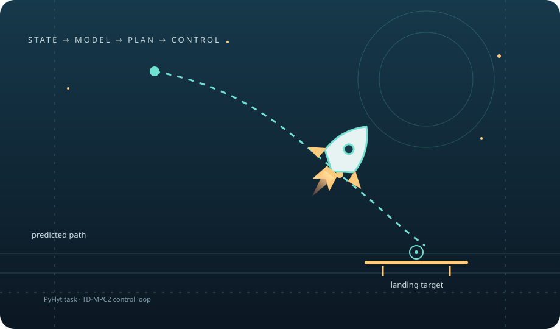

Rocket task adapter
Creates the configured PyFlyt Rocket-Landing task and adapts observations and actions for the trainer.
An adaptation of TD-MPC2 for the PyFlyt rocket landing task, with a Gymnasium environment adapter and configurable dynamics randomization.

A compact view of the implemented training path and task integration.
Creates the configured PyFlyt Rocket-Landing task and adapts observations and actions for the trainer.
Runs the online training path from train.py with Hydra configuration and a CUDA-enabled PyTorch build.
Uses evaluate.py and config_e.yaml to evaluate a selected checkpoint and optionally save video.